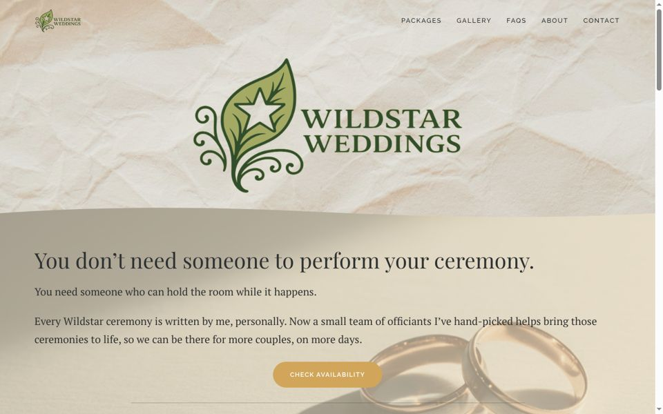
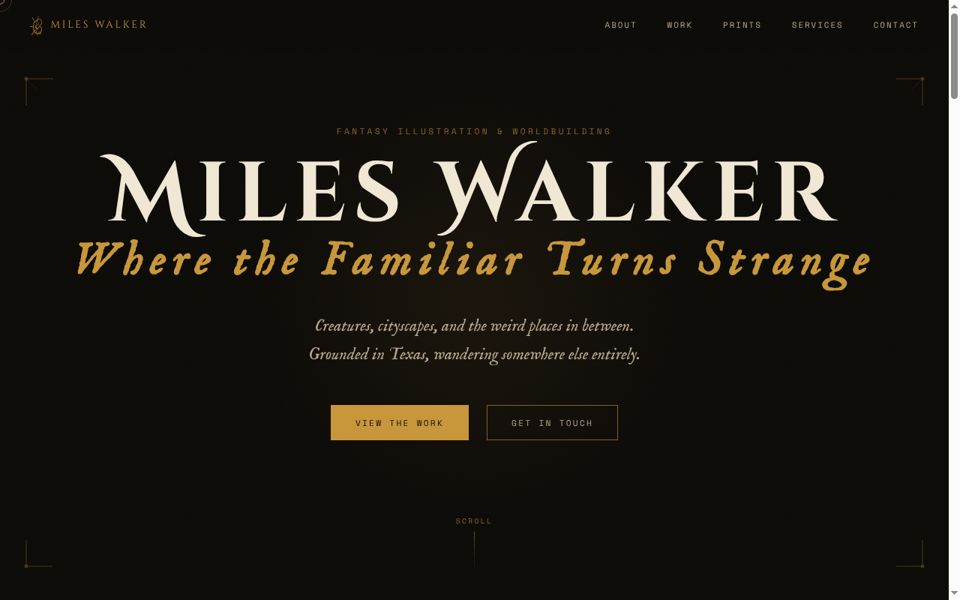
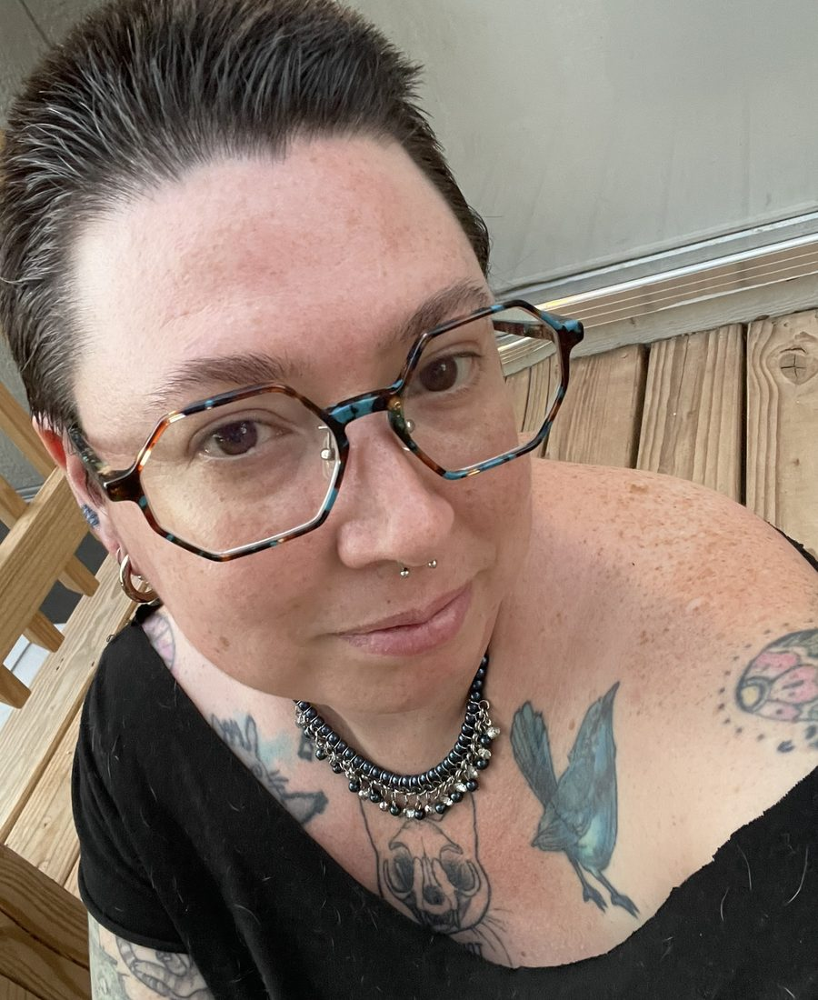

Cells
Poems about family, womanhood and life, and the fleeting moments of joy and sorrow that shape us.
Buy the paperbackNew Braunfels, Texas
Poet, officiant and small business builder. I write poems and ceremonies, build websites, and help small businesses get up and running.
Writing
Two self-published collections about family, home, love and the small moments in between.
Poems about family, womanhood and life, and the fleeting moments of joy and sorrow that shape us.
Buy the paperback
Poems written between 2019 and 2021 about dreams, family and relationships, with a few short-story verses. Occasionally, there's cats involved.
Buy the paperbackI walked along the Old Roads And there I met with Death Grinning at his own jokes For a time we walked together And the leaves fell around us And the ground gave way to snow A stark and beautiful winter I marveled to see it All that was once bright and vicious Now muted and serene We rested on a wall And spoke of change And the ice thawed And new buds broke free Color comes too First his hands Then his face Warmth comes and he removes the dark robes I shiver in a sudden breeze The robes are returned to me I make another joke and grin Life regards me fondly A brief goodbye We'll meet again along the Old Road
"Finish me," she said to the sea And the thought resonated in me. "Make me soft and gentle and whole." Oh to be whole! To be cherished and cradled carefully, loved and wanted for all of me. Take me! Take every sharp edge and hard corner, every harsh light and cutting word, and help me be whole. Fit me into the mosaic of your life. Coddle me, and hold me close to your pattern. Make me a part of it. Finish me, or let me finish you. Let us find in each other the last pattern piece of our own stained glass.
Websites
Hand-built, fast and easy to keep up. Each one is written around the person or business it's for.

My officiant business. I wrote, designed and built the whole site, from packages to the FAQ.
Design · copy · build · hand-built HTML
wildstarweddings.com
My operations consultancy, with packages, a booking link and a contact form.
Design · copy · build · GitHub Pages
bluestem.systems
A portfolio for a Central Texas landscape painter, with a gallery and commission inquiries.
Design · build · GitHub Pages
teddyjohnsonart.com
A portfolio and print shop for a San Antonio fantasy illustrator, built to replace a Canva site.
Design · build · GitHub Pages
miles2walk.comProjects
Businesses I run, help run, or am building now.
Officiant and creative services in the Texas Hill Country. Every ceremony is written personally.
Operations consulting for small businesses: launch documents, SOPs, handbooks and simple systems.
A residential pool service in New Braunfels that I co-own with Teddy Johnson.
Website and online presence for Teddy's landscape paintings.
Website, print shop and licensing terms for Miles's illustration work.
A brand in the works.
About

I'm a poet, officiant and builder of things in the New Braunfels area of Central Texas. I've self-published two poetry collections, Sometimes There's Cats (2021) and Cells (2024).
Through Wildstar Weddings I write and officiate ceremonies, and through Bluestem I help small businesses launch with their paperwork and systems in order. I also co-run Rux Pool Cleaning and build websites, for my own projects and for others, including Wildstar, Bluestem, Teddy Johnson Art and Miles2Walk.
I'm usually buzzing with a few new ideas at once, happily tangled in a comfortable jumble of notebooks and fountain pens.
Contact
For books, websites, ceremonies or a project of your own. Send a note and I'll get back to you.